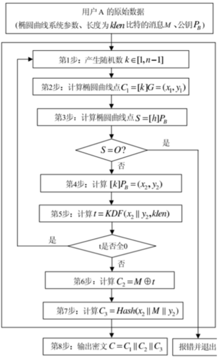
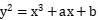
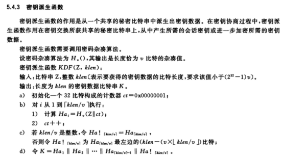

SM2与KDF学习笔记
SM2加密算法
SM2算法是一种基于椭圆曲线密码的公钥密码算法，其安全性主要基于椭圆曲线离散对数难题。该算法由国家密码管理局设计并公开，是我国自主创新的一种密码算法，可应用于数据加密、解密、数字签名等操作。SM2算法包括密钥生成算法、加密算法、解密算法和数字签名算法等部分。
SM2加密算法过程如下：
用户A的原始数据为椭圆曲线系统参数、长度为klen比特的消息M、公钥PB
-
产生随机数k∈[1,n-1]
-
计算椭圆曲线点C1=[k]G=(x1,y1)
-
计算椭圆曲线点S=[h]PB
-
计算[k]PB=(x2,y2)
-
计算t=KDF(x2||y2,klen)
-
计算C2=M⊕t
-
计算C3=Hash(x2||M||y2)
-
输出密文C=C1||C2||C3

其中椭圆曲线方程为

密钥派生函数KDF
KDF密钥派生函数在标准GB/T 32918.4 《信息安全技术 SM2椭圆曲线公钥密码算法 第4部分：公钥加密算法》中定义，本质上是进行哈希运算扩展长度，再截取相应长度字段，如下所示：

使用Python代码实现SM2中的KDF函数如下：
from math import ceil
from gmssl.sm3 import sm3_hash
Z="57E7B63623FAE5F08CDA468E872A20AFA03DED41BF1403770E040DC83AF31A67991F2B01EBF9EFD8881F0A0493000603"
def hex2byte(msg):
ml = len(msg)
if ml % 2 != 0:
msg = '0'+ msg
ml = int(len(msg)/2)
msg_byte = []
for i in range(ml):
# print(msg[i*2:i*2+2])
msg_byte.append(int(msg[i*2:i*2+2],16))
return msg_byte
def KDF(Z,klen):
klen = int(klen)
ct = 0x00000001
rcnt = ceil(klen/32)
Zin = hex2byte(Z)
Ha = ""
for i in range(rcnt):
msg = Zin + hex2byte('%08x'% ct)
# print(msg)
Ha = Ha + sm3_hash(msg)
# print(Ha)
ct += 1
return Ha[0: klen * 2]
print(KDF(Z,19).upper())
其实KDF就是一个使用SM3算法不断拓展长度的过程，对上述脚本进行分析
hex2byte函数:- 目的: 将 16 进制字符串转换为字节数组。
- 流程:
- 检查输入字符串的长度是否为偶数。如果不是，前面补零以确保每两个字符组成一个字节。
- 将字符串的每两个字符作为 16 进制数解析成一个字节，并将其加入字节数组。
KDF函数:- 目的: 从输入数据
Z派生出指定长度klen的密钥。 - 参数:
Z: 16 进制表示的比特串。klen: 希望生成的密钥长度（以字节为单位）。
- 流程:
ct初始化为 1，表示计数器。- 计算需要多少次哈希运算，即
rcnt = ceil(klen / 32)。 - 将
Z转换为字节数组。 - 循环
rcnt次，每次将Z和当前ct组合，计算其 SM3 哈希值，并将结果累积到Ha中。 ct在每次循环之后递增。- 最终，返回派生出的密钥（
Ha的前klen * 2个十六进制字符）。
- 目的: 从输入数据
- SM3 哈希:
- 使用
sm3_hash函数进行哈希计算，该函数来自gmssl库的实现。
- 使用